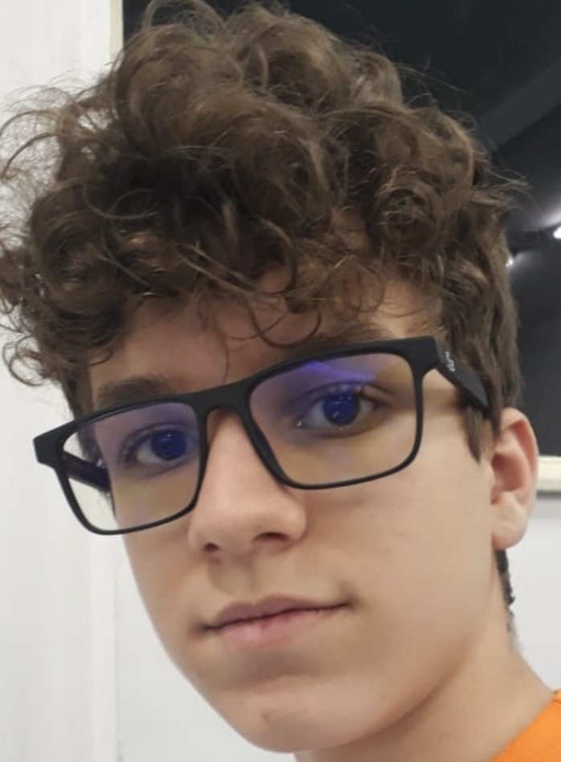

Apresentação
Bem-vindo ao site do Enzo de Souza Braz. Ele tem por finalidade ser um documento de identificação de seu autor.

Aparência
Enzo é um menino homem de estatura média, com porte físico normal, pele branca, de olhos e cabelos castanhos, com algumas covinhas e 15 anos. Suas características mais proeminentes são seus ôculos preto e seu cabelo cacheado, porém, quando entrou no CEFET-MG raspou seu cabelo. Entretanto, seu cabelo já voltou a sua forma normal. Sua roupas combinam bem com seu jeito de ser mais discreto, assim como usar um tênis preto e roupas que combinam, e prefere usar o uniforme quando está presente no colégio.
Personalidade
Enzo possui uma personalidade que não se destaca muito entre as pessoas. Ele é discreto, observador, estudioso, dederminado, focado e detalhista. Se preocupa com as pessoas próximas a ele e dá valor àquelas que se preocupam com ele. Normalmente, é amigável e sempre está de bom humor, mas quando acorda cedo pode se tornar o oposto a isso, ficando muito irritado e calado. Ele só se torna sociável depois de algumas horas acordado. Ele é muito apegado à sua família e faria qualquer coisa por ela. Prefere ficar em casa jogando e assistindo séries a sair de casa.
História
Enzo nasceu no Hospital Unimed Betim às nove e vinte cinco da manhã do dia dois de dezembro de 2004. A partir daí, viveu toda sua vida em Betim. Quando pequeno sua vó materna cuidava dele enquanto seus pais trabalhavam, por isso todos os dias brincava com seu primo Arthur que vivia junto à sua vó. Depois os dois entraram na natação e, conforme o tempo foi passando, foram para a escola. Enzo foi a escola pela primeira vez aos três anos de idade e lá fez seus primeiros amigos: Iagor, Davi e Artur. Juntos brincaram, estudaram e cresceram até passarem para o Ensino Fundamental. Quando eles tiveram que se separar, pois a escola só tinha a Educação Básica. Então, Enzo e Iagor foram juntos para o Colégio Santo Agostinho de Contagem. Nesse Colégio fizeram novos amigos e amaduraceram cada vez mais. Em um ano qualquer, Iagor saiu dessa escola e se separou de seu amigo de infância. Por fim, Enzo criou novos laços de amizade com Maurício, Henrique, Lucas e outras muitas inesquecíveis pessoas. Os anos foram passando até que Enzo decidiu entrar no CEFET-MG e, novamente, se separou de seus melhores amigos, porém dessa vez ainda mantém contato com todos eles.